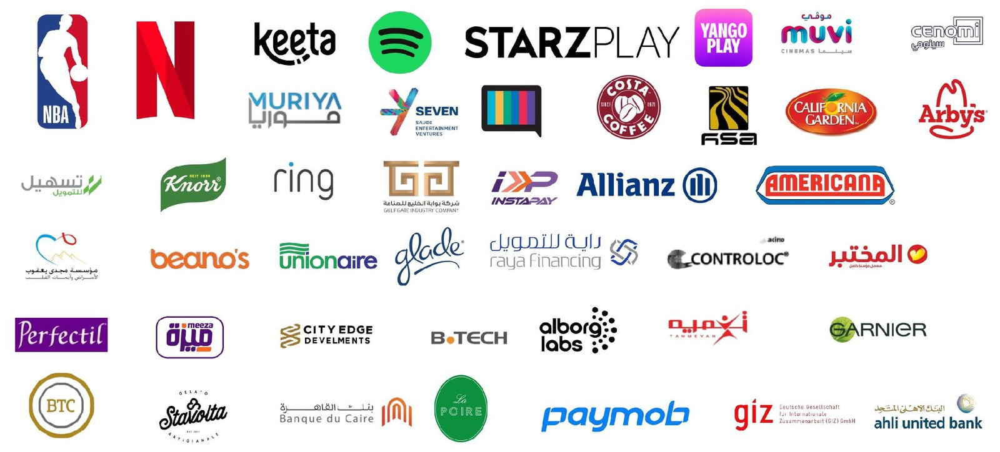
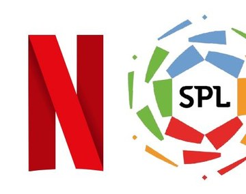
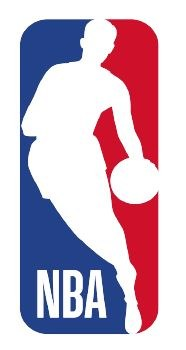
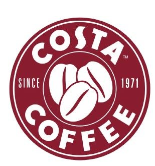
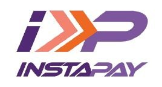

Digital Listening
What people say about you, your category and your competitors, across social, news, blogs and forums.
Credentials 2026
Consumer insights, cultural intelligence and real-time monitoring for brands across MENA.
CAIRO. RIYADH . DUBAI
We help brands crack markets & guide them with intelligence that is digital-first, fast with an AI arm while maintaining the research practices at the core of our analysis.
Cultured focused, we work as your Consumer Insights arm: we provide intelligence across culture, nations side by side consumers, brands & their competition analysis and turn them into decisions you can act on with flexible partnership modules.
Intelligence built from where your audience actually lives: social, search, news and digital behavior, with diverse language coverage.
Answers in weeks, not months, without losing depth.
AI behavioral analysis, automated monitoring and always-on pipelines that scale from a one-off deep dive to live radars.
Boutique intelligence for brands in complex markets:
digital, fast & accurate. Combining the best of both worlds.
Where your brand and category stand: perception, share of voice and competitors.
What a campaign actually moved in conversation and sentiment.
Always-on monitoring with early-warning flags, down to hourly updates & monthly Reports
Test messaging and creative with real audiences before you spend.
Validate a concept’s appeal, fit and barriers before launch.
Our philosophy
It’s the story within the data that transforms brands.
We act as your dedicated research arm; either through conducting the research solutions ourselves or connecting you with our network of partners to help you turn the ask at hand into a quick win; be it an opportunity or a challenge.
Five services, four research approaches, one data stack.
Our approaches
What people say about you, your category and your competitors, across social, news, blogs and forums.
Who your audience is, what they follow and how each segment behaves.
Direct answers at scale, from in-branch QR surveys to online panels.
Depth from interviews and focus groups, run with trusted research partners.
We blend traditional research basics with digital tools, and drop the weaknesses of each.
Data sources:

Netflix MENA
As Netflix MENA’s regional CI partner, we joined the content team in the research phase, before production began on a documentary that went on to stream on the platform.
We mapped how global audiences saw the SPL after Cristiano Ronaldo’s move in late 2022: the volume of conversation, the wave of transfers it triggered, and how each signing was received. We also tracked the sensitive reputational debates the league raised about Saudi Arabia.

NBA
How is basketball perceived across MENA, the Gulf and the Levant — and how does the NBA stack up against competing leagues?
We mapped the influencers and platforms that matter in each country, the content fans create about the NBA, and the local nicknames Arab fans give their favorite players.
All of it fed a brand comms strategy built to resonate with MENA’s diverse audiences.

Costa Coffee
A niche question that’s harder than it looks: does the bitterness of Costa’s bean range suit Gulf coffee drinkers?
A digital survey for branch visitors across the Gulf: a QR code in every branch, with a 20% discount for taking part.

InstaPay
Since early 2023, the early days of what is now the Egyptian government’s flagship fintech. We have protected the brand against rumors and carried users’ voices, from bill payments to fee concerns, to decision-makers.
A dedicated in-house team flags transfer and payment-sync issues around the clock. When transfer fees launched, we sent hourly sentiment and FAQ updates. During the Ramses Central fire, we showed how talk of Egypt’s digital transformation shifted, with InstaPay at its center.

Independent study
Our independent deep dive into fan behavior, streaming preferences and rising local talent across Spotify, Anghami and Apple Music, during a pivotal entertainment surge.
Fan conversations, not platform deals, shape perception and turn local artists into national icons. Moments like Cairokee in Jeddah and Sherine in AlUla sparked surges far beyond streams. Segments ranged from K-pop superfans on Spotify to Arabic-classics loyalists on Anghami.
Creative Industry Summit · Riyadh, Oct 2026
Show attendees, speakers and organisers what the world was saying about Creative Summit قمة الإبداع, while it was happening.
A bilingual live dashboard, Arabic first, updated every hour. AI tagged sentiment, speakers and themes, and our analysts verified every post and wrote the story so far. A second view tracked the wider Saudi creative scene.
Event view, 3–5 Oct 2026:
Let’s find the story in your data.
Noor Hussam, Head of Consumer Insights
noor.hussam@kijamii.com